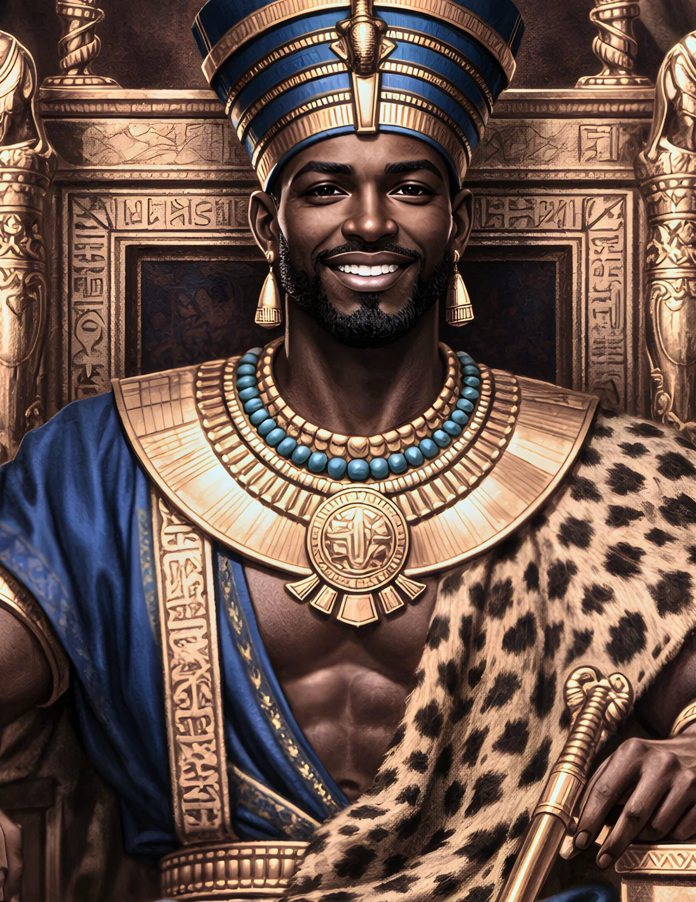

Piye (Piankhy)
A Kushite king, a victory inscription, and the difficult question of whose version of a campaign survives.
Begin the Lesson ↓
Essential Question & Learning Objectives
Essential question: How can a king's victory inscription help us understand an ancient campaign without accepting every royal claim as an impartial account?
Students will be able to:
- Identify Napata, Kush, Thebes, and the Nile Delta and explain how geography shaped Piye's campaign.
- Explain how Piye's Victory Stela communicates military success and religious authority.
- Distinguish events reported in an inscription from the ruler's persuasive interpretation of those events.
- Compose an evidence-based museum label noting at least one missing perspective.
Success criteria: Explain two accurate historical details, examine at least one source limitation, make a supported claim, and score 4 of 5 on the post-check after review. The post-check is not a substitute for assessment of written reasoning.
Teacher Guide · Pacing, Standards, UDL & Differentiation
Suggested pacing: Hook and prior knowledge 5 min; readings, source comparison and questions 18 min; two Decision Rooms 12 min; performance task and peer discussion 15 min; final check 8 min. Adjust as needed; use the shared sticky toolbar timer when useful.
Instructional alignment: CCSS RH.6-8.1 (cite evidence), RH.6-8.2 (central ideas), RH.6-8.9 (compare sources); WHST.6-8.1 and WHST.6-8.9 (argument and evidence). Extend with grades 9–12 RH/WHST source criticism and historiography where appropriate; these are alignments, not a state endorsement.
UDL options: Let students reread chunks, use device accessibility tools, write or speak a claim, annotate a timeline/map, and revisit feedback without penalties. Use visual models alongside print rather than relying on audio alone.
Misconception to watch: A victory stela is valuable primary evidence but it is also a political statement designed to celebrate the patron; it is not neutral reporting.
Discussion practice: Ask students to separate the author's claim, the source's date and purpose, and the conclusions we can support.
CAST UDL Guidelines 3.0 · Common Core grades 6–8 historical literacy
Independent Learner Guide · Saving, Progress & Assessment
Start with the diagnostic. Read the three illustrated inquiry sections. Check responses and read the explanations; revise as needed. Decision Rooms are hypothetical choices that help analyze evidence, not factual reconstructions. Complete the final claim and five-item check. The progress bar measures how far you scroll, not mastery; timers are optional and cannot lower a score.
The written reflection saves only in this browser when you press Save. Avoid personal information on shared devices. The video panel contains editorial preview candidates for teacher review, not yet approved as assigned lesson media.
Whose Victory Is Carved in Stone?
A stone inscription describes a king whose army advanced along the Nile and compelled rival rulers to submit. Imagine you are the museum historian translating that inscription. It tells you what the king wanted audiences to remember—but does it tell you how every participant felt?
Your first task is to separate a source's account from an independently verified conclusion. Then examine how geography, ritual and political claims shape what we know about the Kushite king Piye.
Formative · Bloom: remember and understand · Do not grade the diagnostic
Before you begin: Which statements are responsible ways to use a royal victory inscription?
From Napata to the Nile Delta
Piye ruled Kush from the region of Napata, in what is now Sudan. Kush had its own political institutions, religious life, royal traditions and long connection with Egypt. The Nile connected settlements but also posed logistical challenges: armies, supplies and messages had to move through a long valley punctuated by different centers of power.
In the eighth century BCE, Egypt was divided among regional rulers. Piye increased Kushite influence in Upper Egypt. When an alliance led by Tefnakht in the north challenged his position, the campaign moved toward the Delta. The events became part of the political history historians call Egypt's Twenty-Fifth, or Kushite, Dynasty.
A map should therefore show more than a northward arrow. It must mark Napata, Thebes and the Delta while indicating that authority and allegiance differed across communities.
Check 1 · Which geographic explanation is best supported?
Reading Piye's Victory Stela
The Victory Stela associated with Piye was found at Gebel Barkal and describes his campaign in Egyptian hieroglyphs. Its scenes and text celebrate victories and acts of submission. It also connects political authority with religious legitimacy, illustrating how military success could be framed as the fulfillment of sacred obligations.
Read a royal inscription as an argument. The king and his scribes selected incidents, arranged events and emphasized conduct meant to demonstrate worthy rule. A surrender scene can document the image a court promoted; it cannot tell us, by itself, the full motivations of people represented as defeated.
Historians can study the source's language, relief scenes and archaeological context while asking which voices remain unrecorded—soldiers, residents, rival rulers and traders among them.
Check 2 · Select two sound historical conclusions.
Watch & Examine · The Kushite King and the Victory Stela
TEACHER REVIEW · Candidate 1 — not yet approved
Candidate 1: Invicta, Forgotten Wars — The Nubian Invasion of Egypt (720 BC). Focuses on Piye, his military campaign, and the Victory Stela. Open video on YouTube.
TEACHER REVIEW · Candidate 2 — alternative, not yet approved
Candidate 2: The Kushite Epic — The Complete Story from Kashta to Shabaka. Broader context that includes Piye and the Victory Stela. Verify language, captions, duration, accuracy, and suitability before selecting for students. Open video on YouTube.
Both videos are offered for teacher preview only. No video has been approved as the official lesson selection. The lesson and assessments remain fully usable without video.
Suggested timer: 8 minutes · Use the sticky toolbar above for discussion and evidence analysis.
Authority Beyond the Battlefield
Piye's inscription pays attention not only to battlefield events but also to rituals, temples and relationships with local rulers. That combination matters. A king could seek legitimacy through religious dedication, established ceremonial customs and the public recognition of other leaders.
Egyptian and Kushite histories were deeply interconnected, yet Kushite identity was not erased when its kings ruled Egypt. The Twenty-Fifth Dynasty drew on Egyptian forms of kingship while retaining ties to Nubian places and traditions. This history challenges simplistic pictures of an isolated Africa.
A responsible account distinguishes the power Piye exercised, what the monument claims, and how later scholars interpret the surviving evidence.
Decision Room: Label the Victory
Formative historical inquiry · Scenario is a modern teaching simulation, not a reconstructed conversation
A museum plans a caption for the stela. A visitor wants a single sentence explaining the carved scene. Which label should you propose?
Decision Room: A Dispatch from the Nile
Formative historical inquiry · Scenario is a modern teaching simulation, not a reconstructed conversation
You are preparing an evidence packet for a discussion of why local rulers submitted. Which research strategy should your group use first?
Create a Museum Label for Piye's Stela
Develop a short, accurate museum label that names the object, dates its broad period, identifies the king's purpose and acknowledges a limitation.
- Write a 120–180-word museum label with a source attribution and two geographical or political details.
- Write a curator's audio script explaining how a victory inscription differs from independent verification.
- Sketch a route map of Kush, Thebes and the Delta, then annotate how the stela uses geography to tell a story.
Every option needs: A clear claim; at least two details grounded in the readings; one acknowledgment of uncertainty; an explanation linking evidence to the conclusion.
Summative performance · 5–6 strong · 3–4 developing · 0–2 revise and conference
Show What You Know
Answer five questions, check each explanation, and revise as necessary. Correct feedback includes a confetti burst; inaccurate selections receive red feedback. Answers stay on this device.
1. Piye's kingdom was centered in which region?
2. The Victory Stela is most directly evidence of...
3. Which techniques improve an interpretation of the stela?
4. Why does the Nile matter to this history?
5. Which claim is responsibly qualified?
The Historian's Evidence Portfolio
- Create a labeled Nile map marking Kush, Thebes and the Delta, distinguishing political regions from modern borders.
- Compare a paragraph of an account commissioned by a ruler to a modern museum description. Identify who selected each detail.
- Draft two contrasting exhibition labels: one celebratory and one evidentiary. Explain which serves historical inquiry better.
Sources, Interpretations & Evidence Limits
Piye's Victory Stela is an ancient source that requires careful translation and source criticism. Modern institutions help explain the artifact and Kushite historical context.
Reading and scenarios are original educational synthesis and simulations, not quotations from these sources. External material opens in a separate tab. Verify exact wording, dates, and image permissions when assigning outside content.